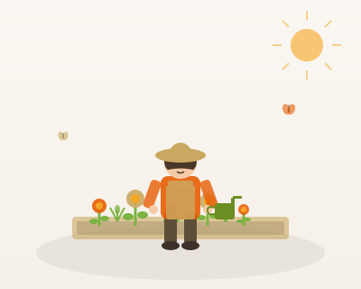
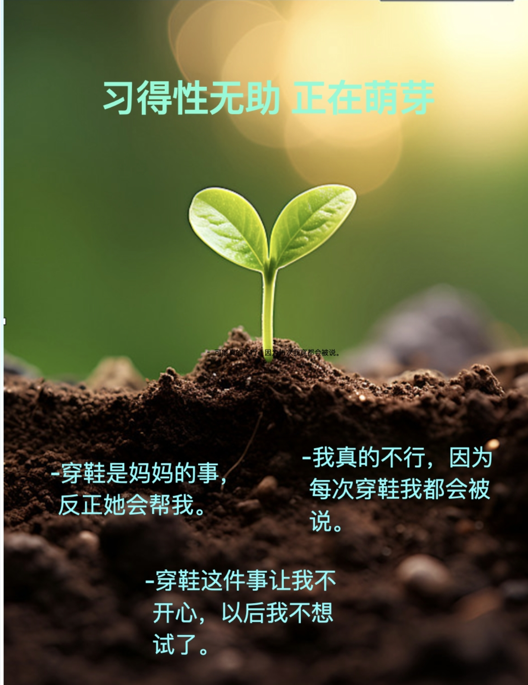
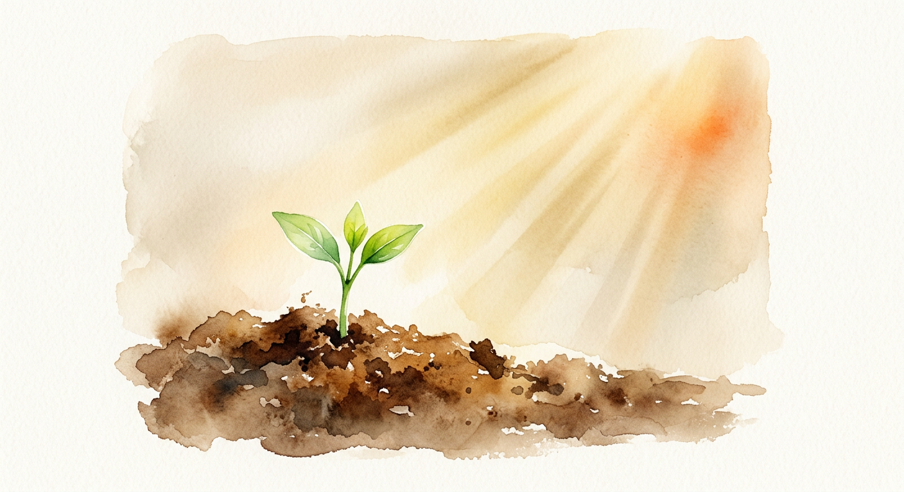
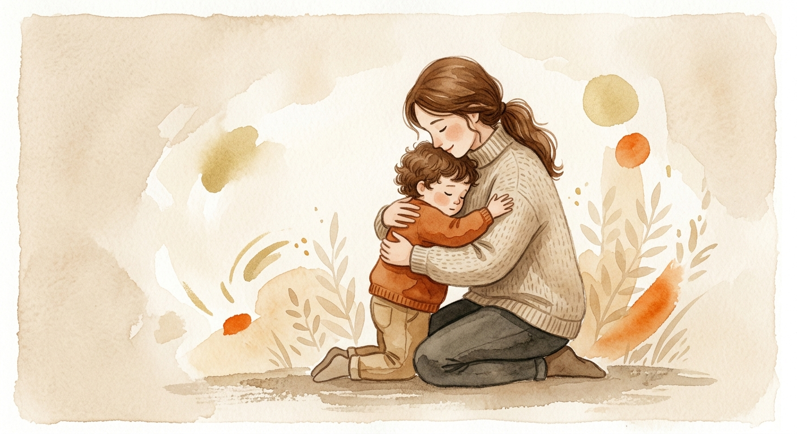
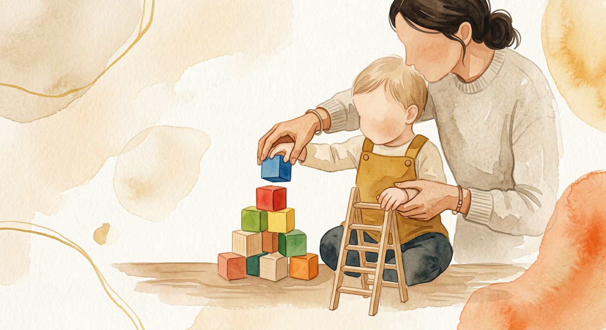
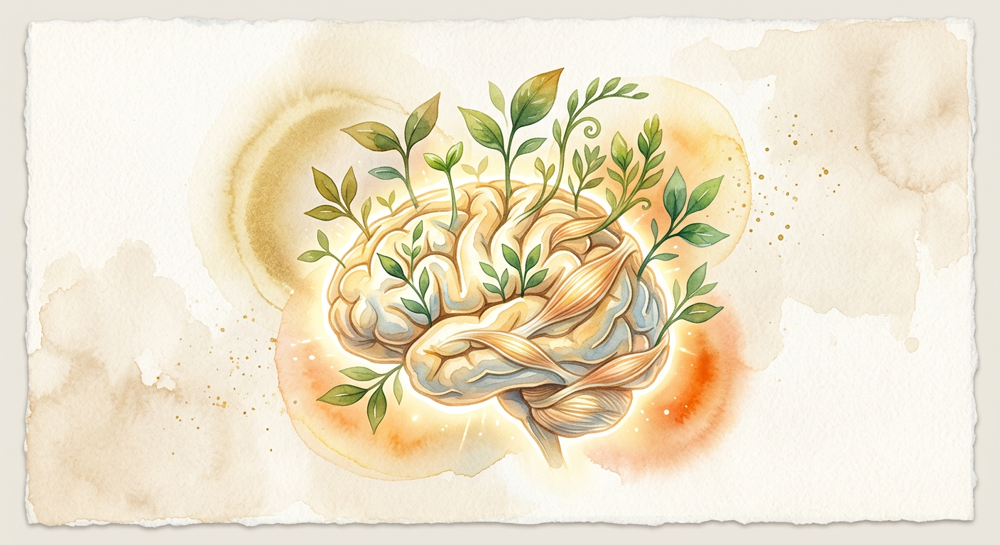
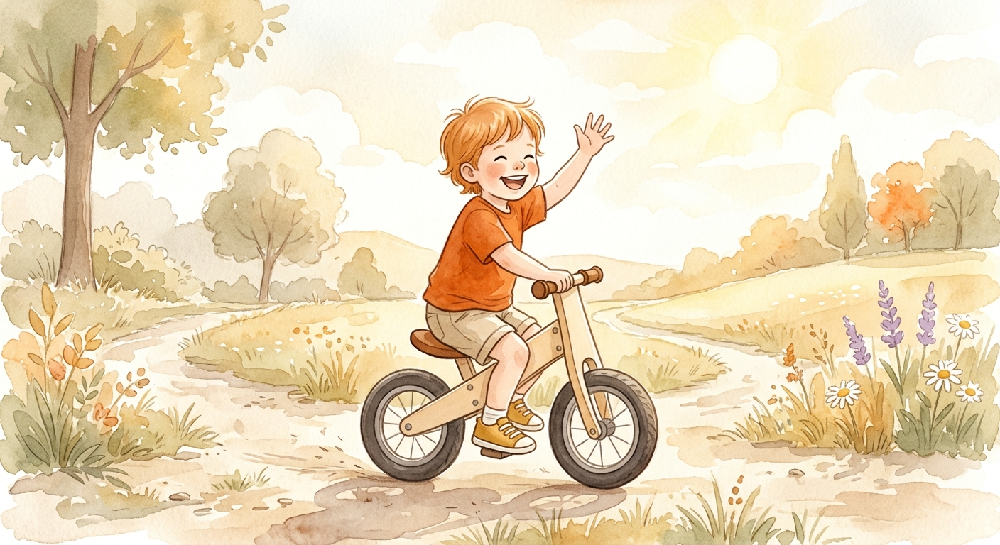

基于心理学视角，培养3-6岁孩子的内驱力


“我不行。”
无所事事
代劳
谨小慎微
批评
发怒
威胁
从经验中“学会”
“无论我怎么做都没有用。”
行为变化
于是放弃努力
最终结果
即使机会出现，也不再尝试
| 孩子的体验 | 心理翻译 | 长期后果 |
|---|---|---|
| 多次尝试穿鞋失败 + 被批评/代劳 | “我永远也学不会穿鞋” | 放弃自理尝试 |
| 每次搭积木倒塌都被说“你怎么这么笨” | “我就是搭不好积木的人” | 逃避建构类游戏 |
| 画画被说“不像”或直接被代笔 | “我画的东西不够好” | 不敢自由表达 |
| 求助时被拒绝或嘲笑 | “我的需求不重要” | 不敢主动求助 |
关键认知
| 家长的做法 | 对孩子的影响 | |
|---|---|---|
| 1 | 说的每件事几乎都不是真的 | 孩子感到被敷衍，不信任父母的反馈 |
| 2 | 替孩子做了他自己做不到的事 | 传达“放弃，让别人来解救你” ——这恰恰是在教孩子无助 |
| 3 | 没有对悲观解释提出反证 | 坚信“我什么都做不好”的悲观结论 |
我们想让孩子“感觉满意”，
却忘了教孩子如何“表现满意”。
而真正的自信，只能来自后者。
具体思维
很难理解“这次失败不代表永远失败”
→ 一次失败 = “我就是不行”
自我中心
倾向于把一切归因于自己
→ 父母吵架 = “是我不好”
权威依赖
高度依赖成人的评价
→ 父母说“你笨” = “我真的笨”
永久性
“我永远也学不会。”
普遍性
“我什么都做不好。”
个人化
“都是因为我笨。”
| 维度 | 悲观解释 | 乐观解释 |
|---|---|---|
| 永久性 | “我永远也学不会。” | 暂时化：“我只是还没学会。” |
| 普遍性 | “我什么都做不好。” | 特殊化：“这件事我没做好。” |
| 个人化 | “都是因为我笨。” | 行为化：“方法不对，换一种试试。” |
| 错误的做法（感觉满意） | 正确的做法（表现满意） |
|---|---|
| 孩子失败后说“没关系，你是最棒的” | 孩子失败后说“我们看看哪里出了问题” |
| 替孩子完成他做不到的事 | 搭脚手架，让孩子自己完成大部分 |
| 空洞表扬“你真聪明” | 具体反馈“你刚才很努力” |
| 避免让孩子体验失败 | 允许失败，并教他正确归因 |
争议本身不可怕，可怕的是我们的“解释风格”
| 错误批评（制造无助） | 正确批评（培养乐观） |
|---|---|
| “你怎么总是这么粗心？”（永久性） | “今天这道题你有点着急，下次慢慢检查。”（暂时性） |
| “你什么事都做不好！”（普遍性） | “今天积木没搭好，但你之前画画很棒。”（特殊性） |
| “你就是个不听话的孩子！”（个人化） | “今天你没有听指令，但平时你很懂事。”（针对行为） |

从“他驱”到“内驱”
自主感、胜任感、归属感是激发内在动机的关键心理营养。
胜任力不是成绩或才艺
而是 “我能解决眼前问题的信心”。
核心方法
先接纳情绪，再搭脚手架，最后归因于努力
接纳
脚手架
归因
核心认知
“我在这里，我看见你了。”

| 场景 | 错误回应 | 正确接纳 |
|---|---|---|
| 积木倒了发脾气 | “有什么好哭的？” | “积木倒了你好生气，要是我搭的倒了，我也会生气。我们抱一下，然后一起看看怎么办。” |
| 穿不上鞋着急 | “别急别急” | “穿不进去很烦对不对？深呼吸一下，妈妈陪你。” |
| 画画说“我不会” | “怎么不会呢？” | “你觉得自己画不像，有点不敢画了，是吗？很多小朋友都这样。” |
孩子情绪上头时，
大脑的理性部分是不工作的。
先抱抱，再讲道理。
核心认知
“我只帮你一点点，剩下的你来。”

积木
孩子做不到的：第5层开始不稳
脚手架：“我扶住下面三层，你来加第四层”
孩子完成：70%
画画
孩子做不到的：不会画小狗耳朵
脚手架：“我来画耳朵，你画脑袋和眼睛”
孩子完成：60%
只帮孩子“差一点点”就能做到的那一步
孩子完成的工作量必须超过50%
每次成功后退一步，逐步撤除帮助
脚手架不是替孩子盖楼，是扶着梯子让他自己爬上去。
核心认知
“你的大脑像肌肉一样，越练越强。”

| 场景 | 错误归因（固定型） | 正确归因（成长型） |
|---|---|---|
| 成功穿上鞋 | “宝宝真聪明！” | “你刚才很努力地把脚后跟踹进去了，没有放弃。” |
| 积木搭得高 | “你真是个小天才！” | “我看到你这次搭的时候，每一层都对得很齐，这个方法管用。” |
| 画画被夸 | “你画得真像！” | “你观察得很仔细，小狗的耳朵是耸拉下来的，你画出来了。” |
| 失败/做不好 | “你怎么这么不认真？” | “这个方法不work，我们换一个方法。你只是还没找到窍门。” |
✅ 成功时
議努力、議方法、議坚持
❌ 失败时
加个“还没”、换个方法、不贴标签
"你真聪明"是毒药， "你很努力"是燃料。
第一步：接纳
“摔倒了很疼对不对？我小时候也摔过。”
第二步：脚手架
“我先扶着车把，你踹地，等你稳了我松手。”
第三步：积极归因
“你刚才摔倒后自己站起来了，还试了三次，这就是坚持。”

一小时后，这个孩子骑着车回头喊：
这就是“我能行！”的声音。
《教出乐观的孩子》
马丁·塞利格曼
《终身成长》
卡罗尔·德韦克
《自驱型成长》
斯蒂克斯洛德 · 约翰逊
感谢大家的到来，让我们一起做园丁，不做木匠。